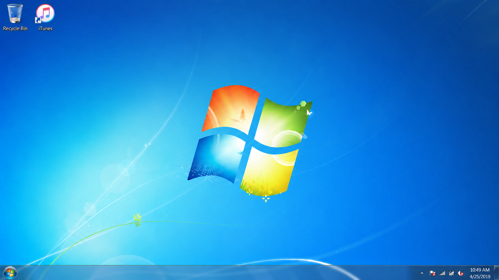

enter

Speakers
30
%
×
◀
Ⅱ
▶
●
Patchmade — xaviersobased
P
Patchmade
Name
Time
Artist
Genre
Rating
✓
Patchmade
--:--
xaviersobased
Internet
★★★★★
A
ACOG
✓
ACOG
--:--
chanelfather
Internet
★★★★☆
Add
assets/audio/ACOG.mp3
when you have the file.
2 songs
Patchmade is loaded.